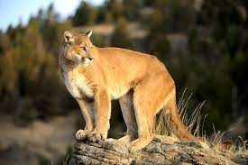

Puma
Puma concolor

A Puma é o quarto maior felino do mundo.
Não faz parte do gênero felino "phantera" pois não ruge.
Apesar de ser um animal solitário, quando necessário a puma usa assobios, gritos, guinchos e ronrona para se comunicar.
Home